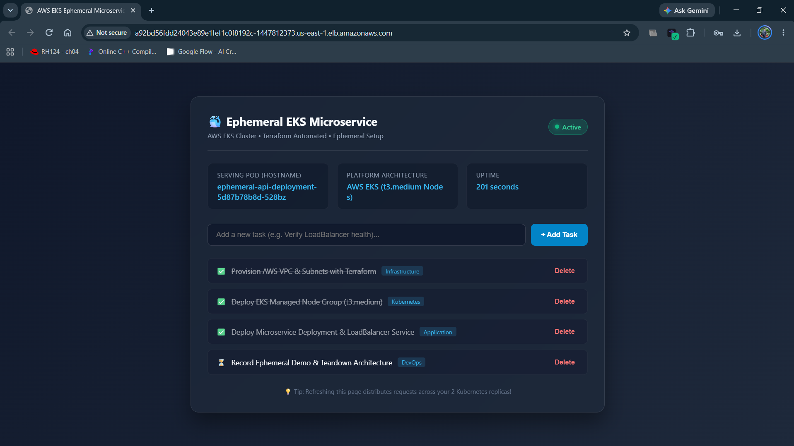
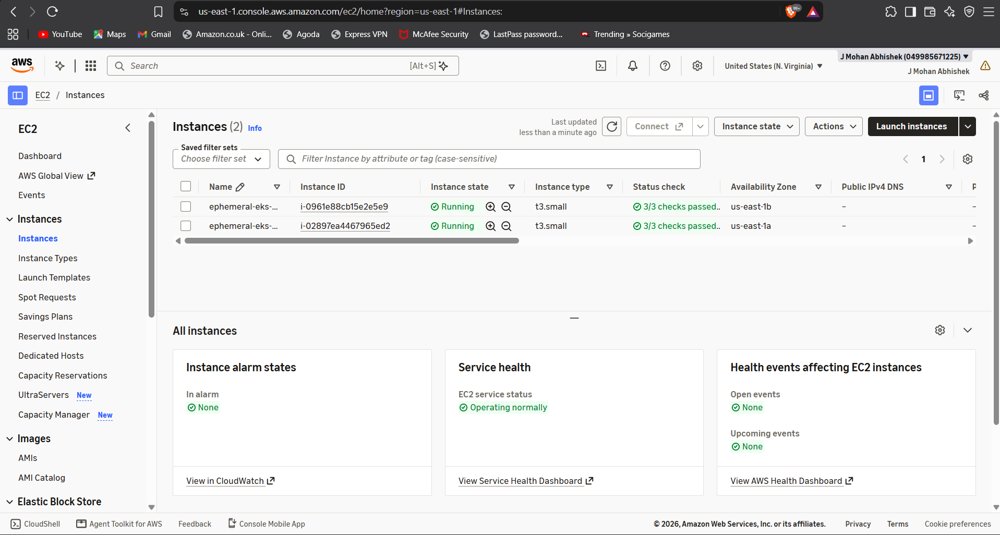
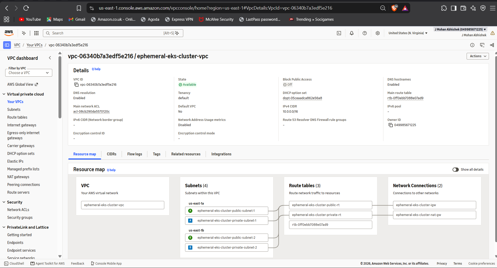

Ephemeral Microservices Architecture on Amazon EKS with Zero Cloud Waste
An enterprise multi-AZ Kubernetes deployment automated entirely through declarative Terraform. Engineered for resilient rolling updates across fault domains, verified under real traffic, and destroyed on-demand to achieve 99.8% infrastructure cost reduction.
The Financial Crisis of Idle Kubernetes Clusters
Why modern engineering teams are pivoting from permanent development clusters to on-demand Ephemeral Infrastructure.
The Traditional 24/7 Waste Pattern
In typical cloud deployments, development teams provision Amazon EKS clusters and leave them running continuously. Even when idle over nights and weekends, an EKS cluster incurs fixed hourly charges for the managed control plane ($0.10/hr), underlying EC2 compute instances ($0.0416/hr each for t3.medium or $0.0208 for t3.small), and VPC NAT Gateways ($0.045/hr).
Over a standard 720-hour billing month, a single idle development cluster quietly burns between $150.00 and $250.00 USD (~₹13,000 to ₹21,000) while delivering zero operational value outside working hours.
The Ephemeral FinOps Pattern
The Ephemeral Architecture pattern treats entire cloud platforms as temporary execution environments. Infrastructure is declared in version-controlled Terraform code, spun up on-demand in 10 minutes, verified through automated smoke tests, and destroyed immediately after testing.
For a typical 30-minute demonstration and verification run, the total infrastructure spend is merely $0.18 USD (~₹15.00). This delivers an astronomical 99.8% cost reduction while proving 100% cloud reproducibility.
Multi-AZ Infrastructure Pipeline
Click any pipeline stage below to inspect real VPC subnets, IAM policies, and ingress mechanics.
Cloud Subnet & Routing Blueprint
| Subnet Name | CIDR Range | Availability Zone | Route Table Target | Hosted Workloads |
|---|---|---|---|---|
public-subnet-1 |
10.0.0.0/24 |
us-east-1a |
Internet Gateway (0.0.0.0/0) | AWS Classic ELB, 1x NAT Gateway (Elastic IP) |
public-subnet-2 |
10.0.1.0/24 |
us-east-1b |
Internet Gateway (0.0.0.0/0) | AWS Classic ELB Multi-AZ Secondary Ingress |
private-subnet-1 |
10.0.10.0/24 |
us-east-1a |
Single NAT Gateway (0.0.0.0/0) | Worker Node 1 (10.0.10.166), Pod Replica A |
private-subnet-2 |
10.0.11.0/24 |
us-east-1b |
Single NAT Gateway (0.0.0.0/0) | Worker Node 2 (10.0.11.100), Pod Replica B |
Chaos Engineering & Traffic Balancing Lab
Simulate production traffic balancing and witness Kubernetes self-healing during pod failures in real time.
FinOps Cost Comparison & Burn Rate Calculator
Drag the duration slider to see real mathematical proof of ephemeral cloud savings.
AWS Management Console Evidence Catalog
Verified snapshots captured live during the deployment in AWS region us-east-1.






Deterministic Lifecycle Playbook
Execute these declarative commands to reproduce this exact ephemeral architecture.